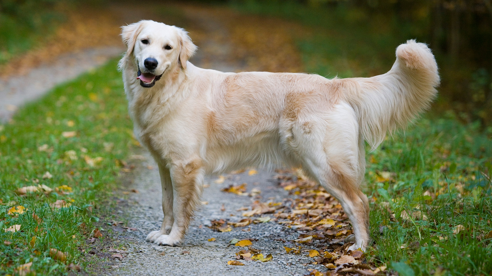
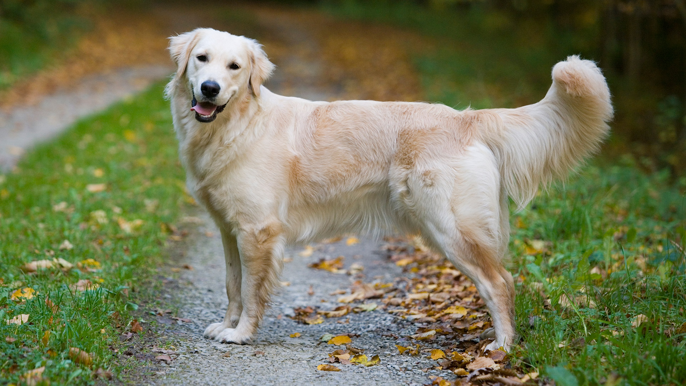

Esta ONG “Ayuda a un peludo” trabaja con la adopción de animales que viven en la calle,
de los cuales necesitan de los cuidados necesarios y los suministros vitales de cada ser vivo.
Se parte de la vida de uno de estos animales y ayudalos a que tengan un hogar.
Ayuda a un animal que necesita de una familia, de cariño, necesita de ti.
Tu puedes ser parte del comienzo de una vida con patitas peludas.
Nuestros integrantes:
- Alberto Sanchez - Presidente de la funbdación
- Liliana Saéz - Colaboradora
- Marcelo Nuñez - Colaborador
- Sofia Beltran - Colaboradora
- Elena Millaray - Colaboradora
- Alberto Fuentes - Colaborador
Nuestras secciones de ayuda:
 
